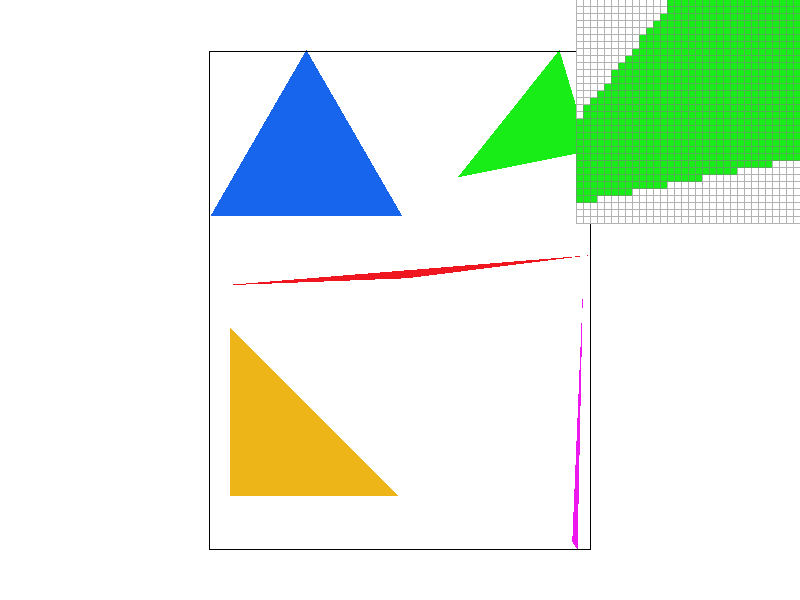
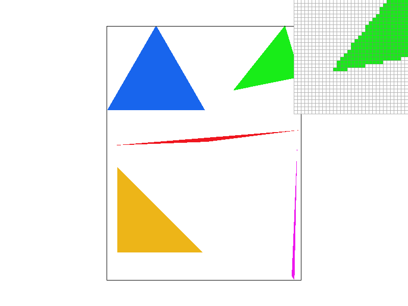
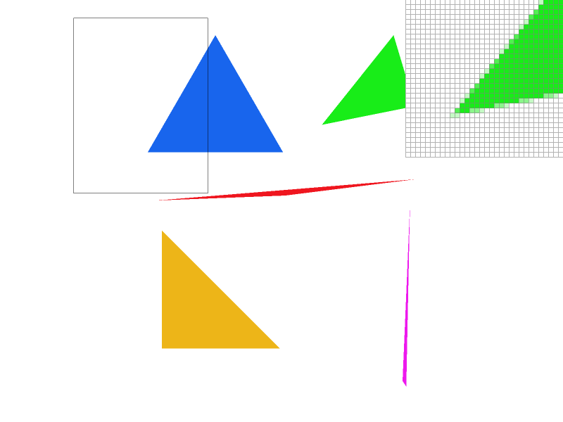

In this homework, I implemented a simple rasterizer capable of rendering 2D vector graphics. The project covered several key graphics programming concepts, including drawing single-color triangles, implementing antialiasing through supersampling, applying transformations, and texture mapping with antialiasing. I particularly found the challenge of optimizing the triangle rasterization process enlightening, as it required a deep understanding of spatial relationships and efficient iteration through pixel data.
To rasterize triangles, I employed an algorithm that iterates over each pixel within the triangle's bounding box to determine if the pixel's center lies within the triangle. This process involves calculating the barycentric coordinates for the pixel's center relative to the triangle's vertices. A pixel is colored if its center is determined to be inside the triangle, based on the condition that all barycentric coordinates are positive and sum to less than one.
The algorithm efficiently narrows down the number of pixels to be checked by first calculating the triangle's axis-aligned bounding box. This ensures that only pixels that could potentially lie within the triangle are considered. The barycentric coordinate method allows for an elegant determination of a point's inclusion within the triangle, accommodating the case where points lie exactly on one of the triangle's edges.
|

|
Antialiasing through supersampling is a technique aimed at reducing the visual artifacts at the edges of rendered shapes, notably triangles, to achieve smoother visual outputs. By sampling multiple points within each pixel and averaging their colors, we mitigate the jagged edges commonly observed in rasterized images, resulting in a more visually appealing image. The core of this approach lies in the implementation of a supersampling algorithm alongside the necessary data structures to support high-resolution sampling.
In adapting the rasterization pipeline for supersampling, we introduced a supersampled buffer, effectively rasterizing scenes at a higher resolution. Each pixel's final color is then determined by averaging the colors of the supersamples within it. This process was particularly crucial for triangles, where the edges are most susceptible to aliasing effects. Modifications to the rasterization pipeline included:
sample_buffer to hold a higher number of samples.rasterize_triangle function to account for supersampling, thus ensuring that each triangle is rasterized at the finer resolution dictated by the supersampling rate.resolve_to_framebuffer function that averages supersample colors to determine each pixel's final color.Supersampling is useful for its ability to provide a higher-quality rendering of vector graphics, especially evident in the rendering of triangles where edges can otherwise appear jagged due to the aliasing effect. This method significantly improves image quality by providing a more accurate representation of edges and fine details.
| Sample Rate 1 | Sample Rate 4 | Sample Rate 16 |
|---|---|---|
| 
|

|
|
As observed in the screenshots above, increasing the sample rate from 1 to 16 progressively smooths out the edges of the triangles, significantly reducing the aliasing effect. At a sample rate of 1, the edges are quite jagged, while at 16, they are markedly smoother, demonstrating the effectiveness of supersampling in antialiasing. This smoothing effect is due to the averaging process, which blends the color of edge pixels with their background, creating a gradient that visually softens the edge. Such results underscore the importance of supersampling in rendering high-quality vector graphics.